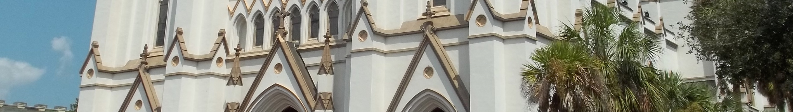

About
Patrice Spirou serves as Lead for Family Catechesis and Curriculum for the Archdiocese of Atlanta. A Catholic educator, writer, and speaker, she works with parish leaders, catechists, and parents to support faith formation in the home and parish. Her ministry centers on helping families grow in faith together and supporting parents as the primary educators of their children in the faith.
Spirou brings more than two decades of experience teaching and ministering in Catholic schools and parishes. Her earlier work included teaching theology at a Catholic girls’ high school and serving as a parish director of religious education in Illinois. Those experiences shaped her approach to catechesis: inviting parents into their children’s formation and connecting parish life with the daily life of the family.
Her work includes Families Forming Disciples, the Archdiocese of Atlanta’s free family faith formation program. The program combines gatherings of families and catechists with prayer, Scripture, conversation, and activities at home. It helps families encounter the Lord together and live as the domestic church, with parish leaders accompanying and encouraging them. Spirou supports parishes and parents as they put this approach into practice.
Spirou presents on spirituality, evangelization, and family faith formation. Her presentations include Family Faith Formation in the Parish, with Dr. Kathie Amidei, for the National Community of Catechetical Leaders. She has also contributed to Loyola Press’s Catechist’s Journey, including the reflection Missionary Zeal, on sharing faith through everyday relationships and the witness of ordinary life.
A wife and mother of four, Spirou draws on family life in her ministry and presentations. Her work encourages a partnership between parents and parishes, with prayer, belonging, and discipleship at the heart of faith formation.
Read more: Loyola Press author profile Family formation in the Georgia Bulletin